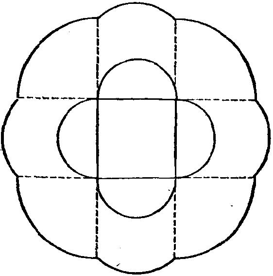

色的数字是2。如果 _6792 能被9整除，则其各位数字的和必须能被9整除(关于弃
9法的法则)，于是这第一个褪色的数字必须为3。
一只火鸡的价格是(在祖父的时代)
$367.92 ÷ 72=$5.11
(6)“已知一点和一个具有对称中心的图形(在同一平面上)之位置，求过
此点并二等分已知图形面积的直线”。所求的直线当然必经过对称中心(见“发
明家的矛盾”一节)。
(7)在任何位置，角的两边必须经过这正方形的两个顶点。只要它们经过
这同一对顶点，则角的顶点在圆的同一个弧上移动(根据作为提示基础的定理)。
因此，所求的两个轨迹之中的每一个都包括几段圆弧：在情况(a)中包括4个半
圆，在情况(b)中包括8个1/4圆，见图31。
图31
(8)袖在某点穿通正方体的表面，该点或者是正方体的顶点，或者在一条
棱上，或者在一个面内。如果这轴经过棱上的一点(但不经过它的端点之一)，
则此点必须是中点，否则在旋转后此棱不能与其本身重合。类似的，一个轴穿
过一个面的内部，则必经过这面的中心。当然，任何轴都必须经过正方体的中
心。因而有三类轴：
(a)4 个轴，每个都经过两个相对的顶点：角 120 °\u65292X角 240 °\u65307X
(b)6 个轴，每个都经过两个相对的棱的中点；角 180 °\u65307X
(c)3个轴，每个都经过两个相对的面的中心；角90 °\u65292X 180 °\u65292X 270 °\u12290X
第一类的一个轴长见第12节；其余的轴长更好计算。所求平均值为